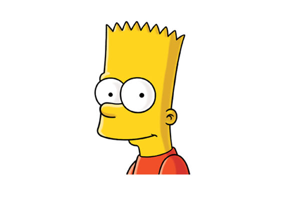
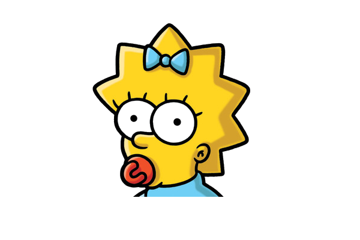
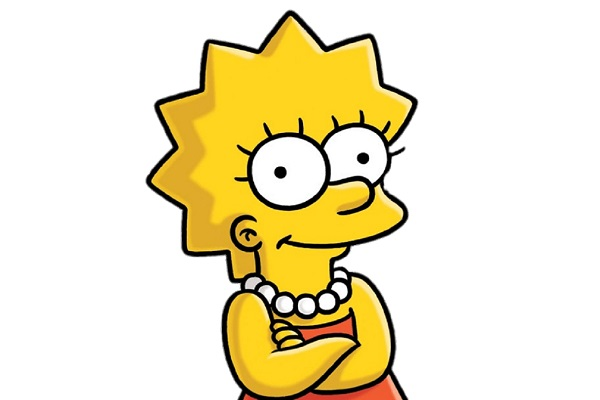

Homer Jay
Simpson
O criador nomeou o pai da família com o nome de seu pai, Homer Groening.
Seu Q.I. baixo é devido ao "Gene Simpson" hereditário, o seu problema com o álcool, a exposição a resíduos radioativos, repetitivos traumas cranianos, e ao lápis de cera situado no lobo frontal do cérebro.
Quando ele e Bart foram presos no Japão, ele foi capaz de falar japonês fluentemente em um período extremamente curto.
Marjorie "Marge" Bouvier Simpson
O seu penteado foi inspirado no filme A Noiva de Frankenstein.
Seu nome é baseado no nome da mãe de Matt Groening
Alguns dos empregos da Marge: Agente Imobiliária, Artista com Palitos de Picolé, Dona de Fast Food, Dona de Academia, Padeira Erótica, Policial, Funcionária da Usina Nuclear, Vendedora do Tortas de Carne, Vendedora de Pretzels, Professora Substituta, Carpinteira, Escritora, Pintora, Dona do bar do Moe, Escultora, Fisiculturista, Prefeita de SpringField

Bartholomew J. Bouvier Simpson
É revelado em alguns episódios, que o mal dentro de Bart deve-se ao fato de Marge ter acidentalmente bebido uma gota de álcool durante a gravidez.
Ele possui sua própria carteira de motorista, recebida após salvar Springfield de um incêndio (mostrado em Big Little Girl).
Apesar do déficit de atenção, aprendeu em pouquíssimas horas a falar francês, espanhol e japonês.

Margaret Evelyn "Maggie" Simpson
Maggie tem esse nome em homenagem à irmã mais nova do criador Matt Groening, Margaret "Maggie" Groening.
Ela já se envolveu em ações perigosas como em quando atirou no Sr. Burns no episódio "Quem matou o Sr. Burns?" e eliminou alguns caras que tentaram matar Homer.
Também sabe tocar saxofone melhor que Lisa, mas sua irmã é a única a saber disso e não tem a menor intenção de mostrar isso as outras pessoas.

Elisabeth "Lisa" Marie Simpson
O seu penteado foi inspirado no filme A Noiva de Frankenstein.
Seu nome é baseado no nome da mãe de Matt Groening
Alguns dos empregos da Marge: Agente Imobiliária, Artista com Palitos de Picolé, Dona de Fast Food, Dona de Academia, Padeira Erótica, Policial, Funcionária da Usina Nuclear, Vendedora do Tortas de Carne, Vendedora de Pretzels, Professora Substituta, Carpinteira, Escritora, Pintora, Dona do bar do Moe, Escultora, Fisiculturista, Prefeita de SpringField
Abraham Jedediah Simpson
“Abe" tinha sua própria casa, que vendeu para que com o dinheiro seu filho Homer conseguisse comprar a sua e se casar, em contrapartida depois de viver algum tempo na casa de Homer, foi mandado para o asilo.
Namorou a idosa mãe de sua nora Marge e em outro episódio, casou e se divorciou da Selma Bouvier, umas das irmãs gêmeas da Marge.
A insensibilidade de Homer com seu próprio pai toma caminhos muitas vezes extremos, como quando Abraham perde seus dois rins apenas porque Homer não o deixou descer do carro para ir ao banheiro, durante uma bela e moral viagem familiar.